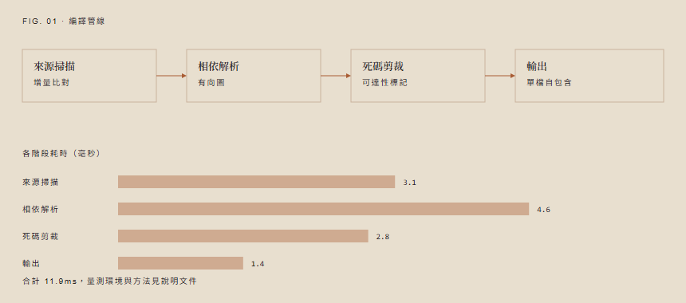

CLI 靜態資產處理工具
單檔零依賴的網頁靜態資產編譯與效能管線 Aperture Asset Pipeline
Aperture 將 DOM 語意、排版與顆粒材質編譯為自包含 HTML。移除死碼與外部依賴，讓資產在三十年後仍能精確重現。
數位檔案的持久性取決於獨立性，而非寫入時的工具複雜度。
將語意、排版與材質封裝於單一檔案，建構 無軟體鎖定 的永久數位資產。
核心功能與特色
Features透過自動化死碼剪裁與離線材質烘焙，確保交付檔案小巧且具備實體質感。
資產樹極致剪裁
自動分析 DOM 結構與 CSS 選擇器使用率，精確移除未使用的規則與排印樣式，顯著降低打包體積。
靜態顆粒與材質烘焙
將底層視覺質感直接合成至 HTML 背景圖層，避免前端執行時即時運算造成的影格掉幀與資源浪費。
嚴格內容契約驗證
在構建階段透過 JSON Schema 自動檢查所有欄位長度與結構，確保產出的靜態文件無缺失或長度溢出。
多語系獨立束化
依據語言設定自動注入相對應的排印參數與字符寬度設定，確保拉丁文與漢字排版皆獲得最佳閱讀經驗。
實際運作畫面
GalleryAperture 在命令行運作與編譯輸出時的真實終端畫面與差異報告。

[需要資料：材質烘焙面板畫面]
系統規格與相容性
Specifications| 項目 | 規格 | 備註 |
|---|---|---|
| 執行環境 | macOS 12+ / Linux / Windows 10+ | 零外部依賴 |
| 編譯速度 | < 15ms / 10,000 DOM 節點 | 單執行緒極速處理 |
| 輸出格式 | Standalone HTML5 (UTF-8) | 符合 W3C 規範 |
常見問題解答
FAQAperture 與一般的網頁打包工具（如 Vite 或 Webpack）有何不同？
Aperture 專注於生成自包含、不可變且具備實體質感的靜態文件。它不注入任何 JavaScript 框架執行時，而是直接將語意、排版與靜態材質編譯為單一 HTML 檔案。
使用 Aperture 編譯出的檔案是否可以在無網路環境下閱讀？
是的。所有字體、材質與樣式均可採用本地路徑或 Base64 內嵌，產出的 HTML 檔案可直接在本地硬碟點擊開啟，三十年後仍能精確重現。
如何將 Aperture 整合至既有的 CI/CD 自動化管線？
Aperture 提供標準 CLI 命令列介面與 Node.js API，單一指令 aperture compile 即可完成驗證與打包，回傳 exit code 0/1 方便 CI 檢查。